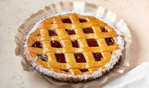

Pastafrola
A classic Argentine dessert and afternoon snack, . You may also be interested in other traditional dishes or going back to the
homepage.

Description
Pastafrola is a traditional Argentine tart with Italian origins. It is usually filled with quince jam, although dulce de leche or sweet potato jam are also common.
The dough is soft and crumbly, and the top is decorated with dough strips forming a grid. Fun fact: There is a team here in Argentina called Club Atlético Lanús that people
make fun of because its crest looks like a pastafrola seen from above.
Ingredients
Below are the ingredients needed for this recipe (8 servings):
- all-purpose flour 400g
- sugar 200g
- butter 200g
- eggs 2
- lemon zest 5g
- baking powder 10g
- quince jam 500g
Steps
-
In a bowl, mix the butter and sugar until creamy. Add the eggs and lemon zest and mix well.
-
Add the flour and baking powder little by little and mix until a soft dough forms.
-
Wrap the dough in plastic wrap and let it rest in the refrigerator for about 30 minutes.
-
Preheat the oven to 180°C. Grease a tart pan.
-
Take two thirds of the dough and press it into the pan, covering the base evenly.
-
Spread the quince jam over the dough.
-
With the remaining dough, form strips and place them on top of the jam in a crisscross pattern.
-
Bake for 35 to 40 minutes, until the dough is lightly golden.
-
Remove from the oven, let it cool, and serve.